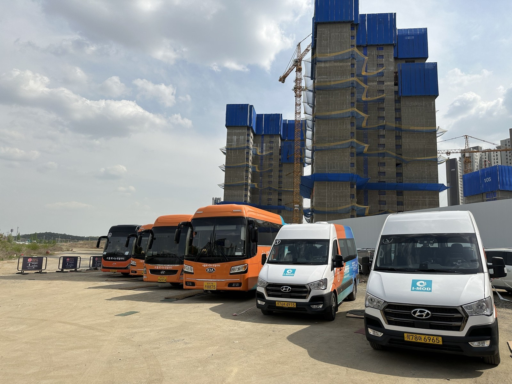
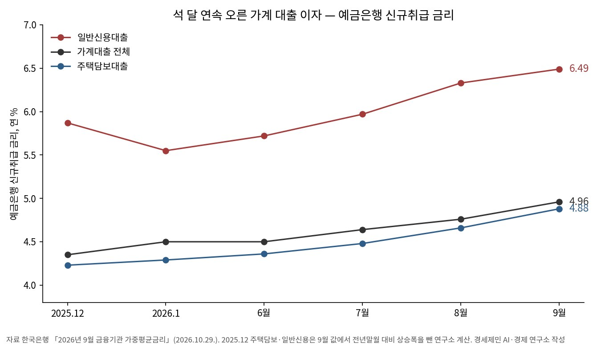
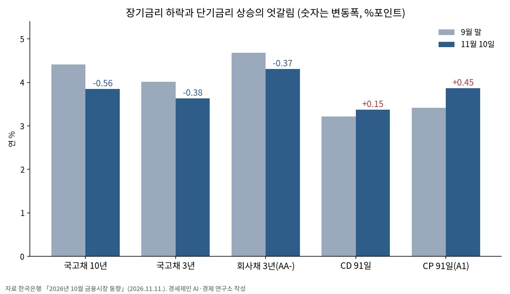
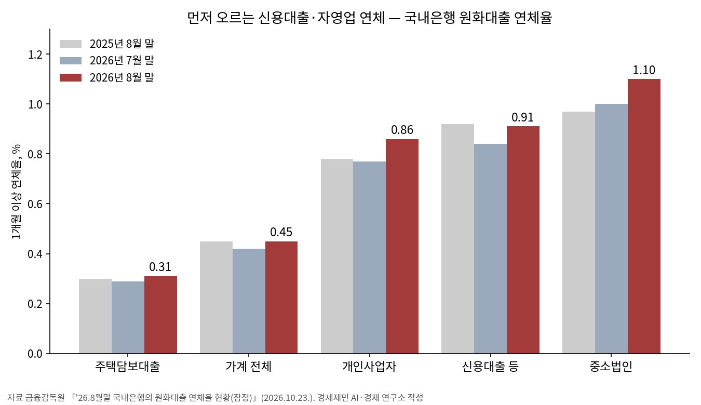
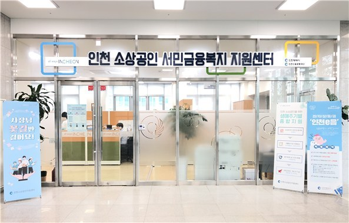
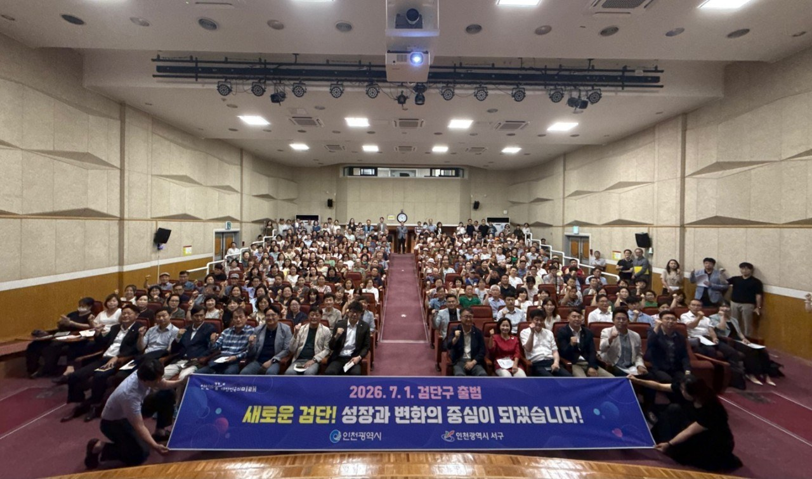

[가계부채] 다시 늘어난 빚 6조4,000억원과 0.61%포인트 오른 대출 이자
10월 금융권 가계대출 6조4,000억원 증가, 1~10월 누적 42조4,000억원으로 지난해 1년치 38조원 넘어
국고채 10년 0.56%포인트 하락 속 양도성예금증서 91일 0.15%포인트 상승, 장단기 엇갈림 0.71%포인트
인천 가계대출 75조9,563억원 가운데 주택담보대출 81.7%, 연체는 신용대출과 자영업에서 먼저

다시 늘어난 빚 6조4,000억원
금융위원회·금융감독원·한국은행은 11일 「2026년 10월 가계대출 동향(잠정)」을 냈다. 10월 금융권 가계대출은 6조4,000억원 늘었다. 1년 전 10월의 4조9,000억원보다 1조5,000억원 많다.
9월에는 2조2,000억원 줄어 올해 처음 감소했다. 감소는 한 달로 끝났다. 1~10월 누적 증가액은 42조4,000억원으로 2025년 1년 동안 늘어난 38조원을 이미 넘었다.
빚이 느는 사이 빚의 값도 올랐다. 한국은행 「2026년 9월 금융기관 가중평균금리」를 보면 예금은행이 9월 새로 내준 가계대출 금리는 연 4.96%다. 8월보다 0.20%포인트, 지난해 12월보다 0.61%포인트 높다.
그런데 채권시장은 거꾸로 움직였다. 국고채 10년 금리는 9월 말 연 4.41%에서 11월 10일 3.85%로 0.56%포인트 내렸다. 같은 기간 양도성예금증서(CD) 91일 금리는 3.22%에서 3.37%로 0.15%포인트 올랐다.
이 글의 물음은 셋이다. 빚은 어디서 다시 늘었나, 장기금리가 내리는데 가계 이자는 왜 내리지 않나, 그 짐은 누구에게 먼저 가나다. 2026년 4분기 열두 대주제 가운데 4번 「대출 이자와 가계부채」 차례 브리핑이다.
자료 아홉, 가공 지표 다섯
자료는 기관 원문 아홉이다. 가계대출 증감은 금융위원회·금융감독원·한국은행의 10월 동향과 금융위원회의 9월 동향으로 본다. 금리는 한국은행의 9월 가중평균금리와 10월 금융시장 동향, 10월 통화정책방향으로 본다.
연체는 금융감독원 「'26.8월말 국내은행의 원화대출 연체율 현황(잠정)」으로, 빚의 크기는 한국은행 「2026년 2/4분기중 가계신용(잠정)」으로 본다. 인천은 한국은행 인천본부의 8월 여수신 동향과 인천시 2027년 예산안으로 본다.
가공 지표 다섯은 원문 숫자로 셈만 했다. 추정은 넣지 않았다. 첫째 누적 비율은 1~10월 누적 증가액을 2025년 연간 증가액으로 나눈 값이다. 42.4÷38.0으로 111.6%다.
둘째 주택담보대출 몫은 10월 주택담보대출 증가액 4조원을 전체 증가액 6조4,000억원으로 나눈 값이다. 62.5%다. 셋째 장단기 엇갈림 폭은 9월 말부터 11월 10일까지 CD 91일 변동폭에서 국고채 10년 변동폭을 뺀 값이다. 0.15−(−0.56)으로 0.71%포인트다.
넷째 1억원 이자 보기는 원금 1억원에 신규 가계대출 금리를 곱한 1년 이자다. 2025년 12월 금리 4.35%면 435만원, 2026년 9월 금리 4.96%면 496만원이다. 잔액 전체의 이자 부담을 추정한 값은 아니다.
다섯째 금리 사다리는 상호저축은행 9월 신규 일반대출 금리 9.80%를 예금은행 신규 대출금리 4.57%로 나눈 값이다. 2.1배다. 신규취급 금리는 그달 새로 내준 대출에 붙은 금리를 금액으로 가중해 평균한 값이다.
장기금리 하락과 단기금리 상승의 엇갈림
10월 증가분의 62.5%는 주택담보대출이다. 주택담보대출은 4조원 늘어 9월 3조2,000억원보다 증가 폭이 커졌다. 금융당국은 이미 승인한 집단대출의 실행이 늘어 주택담보대출 증가세가 이어졌다고 설명했다.
집단대출은 새 아파트 단지의 입주 예정자에게 단지 단위로 내주는 이주비·중도금·잔금 대출이다. 금융당국은 금융회사별 총량목표에서 집단대출을 따로 관리한다. 10월 집단대출은 2조4,000억원 늘어 4월 2조6,000억원 뒤 가장 많다. 수도권 아파트 매매거래량은 3월 2만7,000호에서 9월 1만8,000호로 줄었다. 거래는 줄었는데 대출은 늘었다.
기타대출은 9월 5조4,000억원 감소에서 10월 2조4,000억원 증가로 돌아섰다. 신용대출이 2조9,000억원 감소에서 1조2,000억원 증가로 바뀌었다. 한국은행은 은행 기타대출이 늘어난 까닭으로 9월 계절요인의 기저효과와 개인의 주식 순매수를 들었다.
업권별로는 은행이 5조원, 제2금융권이 1조4,000억원 늘었다. 10월 말 은행 가계대출 잔액은 1,203조9,000억원이다. 가계 빚 전체를 보여 주는 가계신용은 2분기 말 2,019조8,000억원으로 석 달 새 25조9,000억원 늘었다.

가계 대출 이자는 석 달 연속 올랐다. 예금은행 신규 가계대출 금리는 6월 4.50%에서 7월 4.64%, 8월 4.76%, 9월 4.96%로 올랐다. 주택담보대출은 4.88%로 지난해 12월보다 0.65%포인트, 일반신용대출은 6.49%로 0.62%포인트 높다.
같은 9월 기업대출 금리는 4.49%다. 가계는 기업보다 0.47%포인트 비싸게 새로 빌렸다(연구소 계산). 예금은행의 신규 대출금리와 저축성수신 금리의 차이, 곧 예대금리차는 1.12%포인트이고 잔액 기준으로는 2.21%포인트다.
10월 금융시장은 두 갈래로 갈렸다. 9월 말부터 11월 10일까지 국고채 3년은 0.38%포인트, 회사채 3년(AA−)은 0.37%포인트 내렸다. 같은 기간 기업어음(CP) 91일은 0.45%포인트, CD 91일은 0.15%포인트 올랐다.
한국은행은 국고채 금리가 국내외 주가 하락에 따른 안전자산 선호와 주요국 국채금리 하락으로 크게 내렸다고 밝혔다. 단기 시장금리는 기준금리 추가 인상 기대와 은행권 자금조달 확대로 올랐다고 덧붙였다. 한국은행 금융통화위원회는 10월 22일 기준금리를 연 3.00%로 묶었다.
가계가 어느 쪽 금리에 묶였는지가 이 엇갈림의 무게를 정한다. 한국은행 집계로 예금은행이 9월 새로 내준 가계대출 가운데 고정금리는 24.0%다. 1년 전 2025년 9월에는 62.1%였다. 변동금리 몫은 1년 새 37.9%에서 76.0%로 커졌다(연구소 계산).
새로 받은 주택담보대출만 보면 고정금리 몫이 2025년 9월 91.5%에서 2026년 9월 34.2%로 내려갔다. 같은 9월 신규 주택담보대출 금리는 고정이 4.71%, 변동이 4.45%로 고정이 0.26%포인트 높다.
잔액으로도 9월 말 예금은행 가계대출의 57.8%가 변동금리다(연구소 계산, 100−42.2). 변동금리에는 시장금리연동 24.6%와 코픽스(COFIX) 같은 수신금리연동 32.8%가 든다. 코픽스는 은행의 자금조달비용지수로, 예금 금리가 오르면 따라 오른다.

갚지 못하는 빚도 먼저 오르는 자리가 있다. 8월 말 국내은행 가계대출 연체율은 0.45%로 1년 전과 같다. 주택담보대출은 0.31%다. 신용대출 등은 0.91%로 주택담보대출의 2.9배다(연구소 계산). 연체율은 원리금을 1개월 이상 못 갚은 대출의 비율이다.
개인사업자대출 연체율은 0.86%로 1년 전 0.78%보다 0.08%포인트 높다. 중소법인은 1.10%다. 금융감독원은 원화대출 전체 연체율 0.69%가 코로나 이전 10년 장기평균 0.78%를 밑돈다고 했다. 다만 대내외 불확실성과 시장금리 상승 기조를 들어 취약 부문을 중심으로 연체율 상승세가 이어질 가능성이 있다고 봤다.

대출 이자 4.96%가 경제에 말하는 것
금리는 빌린 돈의 값이다. 1억원을 지난해 12월 금리로 새로 빌리면 1년 이자는 435만원, 9월 금리면 496만원이다. 한 달에 5만원 남짓 더 낸다(연구소 계산). 소득이 그대로면 그만큼 다른 씀씀이가 준다.
이 짐은 젊을수록 무겁다. 김미루(2023)는 『KDI 경제전망』(2023 상반기)에 실은 분석에서 기준금리 1%포인트 인상의 효과를 연령별로 셌다. 20대의 연간 소비는 약 29만9,000원(1.3%) 줄어 60대의 약 8.4배다. 신용점수 700점 이하인 부채 상위 청년은 53만9,000원(2.2%)이 준다.
같은 분석에서 청년 부채의 약 85%는 주거 관련 부채다. 노동경제학의 생애 소득 곡선, 곧 나이와 경력에 따라 오르는 소득의 모양으로 보면 경력 초기의 소득은 낮고, 이자는 그 낮은 소득에서 먼저 빠진다.
기업에 금리는 둘로 갈린다. 회사채를 찍는 큰 기업은 9월 말 뒤 장기금리 하락으로 자금조달 비용을 낮출 여지가 생겼다. 자영업자는 다르다. 개인사업자대출은 기업대출로 잡히지만 갚는 사람은 한 가계다. 개인사업자 연체율이 1년 새 0.08%포인트 올라 0.86%가 된 자리다.
통화정책에 이 엇갈림은 전달 경로의 문제다. 시장이 장기금리를 0.56%포인트 내려도 단기금리가 오르면 가계 대출 이자는 내려오기 어렵다. 잔액의 57.8%가 변동금리인 가계에 엇갈림 폭 0.71%포인트는 금리 하락의 혜택이 닿기까지의 거리다. 다만 10월 신규 금리가 아직 나오지 않아 이 판단은 그 숫자로 시험한다.
금융위원회는 10월 15일 가계부채 점검회의에서 올해 가계대출 총량관리 목표를 연간 증가율 1.5%에서 3.0% 수준으로 올렸다고 밝혔다. 빚이 늘 수 있는 양은 넓어졌고, 빚의 값은 단기금리를 따라 오른다. 양과 값이 같은 쪽으로 가계의 짐을 키운다.
분배에서 이자는 빌린 쪽에서 빌려준 쪽으로 가는 소득이다. 잔액 기준 예대금리차 2.21%포인트는 그 흐름의 폭이다. 토마 피케티는 『21세기 자본』에서 자본 수익률이 성장률보다 높으면 부가 이미 쌓인 쪽으로 몰린다고 봤다.

금리 사다리는 그 흐름이 어디서 가장 가파른지 보여 준다. 은행에서 밀려난 차주는 저축은행에서 은행 대출 평균의 2.1배 금리로 빌린다. 은행이 신용대출 관리를 조이면 신용이 낮은 가계부터 사다리 아래로 내려갈 수 있다. 한국은행 인천본부도 8월 인천 기타대출 감소의 까닭으로 신용대출 관리 강화를 들었다.
지표 뒤에도 숨은 것이 있다. 9월의 2조2,000억원 감소를 빚이 꺾인 신호로 읽기는 어려웠다. 금융위원회는 주택거래량·입주물량 감소와 함께 분기말 부실채권 매각·상각, 명절 상여금 같은 계절적 요인을 들었고, 한국은행도 같은 계절요인을 짚었다. 10월 반등이 그 착시를 걷어냈다.
연체율도 분기말마다 내려간다. 원화대출 연체율은 지난해 9월 0.51%, 올해 3월과 6월 0.56%로 분기말에 떨어졌다가 다음 달 다시 올랐다. 곧 나올 9월 말 연체율이 내려도 오름세가 꺾였다고 읽기는 이르다.
빚으로 당긴 소비는 나중의 소비를 깎는다. 미안·수피·베르너(2017)는 30개국의 1960~2012년 자료로 국내총생산(GDP) 대비 가계부채가 늘면 중기에 성장이 느려지고 실업이 는다는 결과를 냈다. 다만 이 결과는 여러 나라의 평균이며 한국의 다음 해 성장을 바로 예측하지는 않는다.
대출 이자 4.96%는 숫자 하나지만 길은 여럿이다. 가계는 쓸 돈이 줄고, 자영업자의 연체는 1년 새 올랐다. 장기금리 하락은 회사채를 찍는 기업에 먼저 닿고, 단기금리 상승은 변동금리로 빌린 가계와 젊은 차주에게 더 무겁게 닿는다.
인천 가계대출 75조9,563억원과 세 제언
한국은행 인천본부에 따르면 인천 가계대출은 8월 3,502억원 늘어 잔액이 75조9,563억원이다. 7월에는 1,496억원 줄었다. 주택담보대출이 3,771억원 늘었고 기타대출은 269억원 줄었다.
인천 가계대출의 81.7%는 주택담보대출이다(연구소 계산, 62조217억원÷75조9,563억원). 한국은행 인천본부는 주택거래량이 줄었는데도 8월 주택담보대출이 늘어난 까닭으로 「서구 등 신규 입주 단지」의 집단대출 실행을 들었다. 서구는 2026년 7월 1일 경인아라뱃길을 경계로 서해구와 검단구로 나뉘었다.

인천의 빚은 국내보다 천천히 늘고 있다. 인천 가계대출 1~8월 누적 증가액은 1조1,722억원이다. 1년 전 같은 기간 4조4,260억원의 26.5%, 2025년 한 해 증가액 4조9,840억원의 23.5%다(연구소 계산). 국내 금융권 1~8월 누적 38조2,000억원은 2025년 한 해 38조원과 맞먹는다(연구소 계산). 두 통계는 집계 범위가 달라 비율로만 견준다.
인천 주택 매매거래량은 3월 4,417건에서 8월 2,930건으로 줄었다. 거래가 줄어도 빚이 늘어난 자리는 새 아파트가 들어서는 서구 등이다. 지리경제학으로 보면 8월 인천의 빚은 도시 전체가 아니라 입주 단지가 들어선 땅에서 늘었다.
인천시는 2027년 예산안에 소상공인 특례보증 출연 100억원과 이차보전 126억원을 담았다. 이차보전은 대출 이자의 일부를 시가 대신 내주는 지원이다. 경세제민 AI·경제 연구소는 셋을 제언한다.
첫째 금융위원회와 금융감독원은 월별 가계대출 동향에 시도별 증감을 함께 실어야 한다. 지금 인천 값은 한국은행 인천본부 여수신 동향으로 두 달 늦게 나온다. 8월분이 10월 26일에 나왔다.
둘째 인천시는 2027년 이차보전 126억원의 지원 대상을 정할 때 제2금융권 고금리 대출을 은행 대출로 바꾸는 자영업자를 먼저 지원하는 방안을 검토해야 한다. 금리 사다리 2.1배와 개인사업자 연체율 상승이 근거다. 다만 연구소는 이차보전 사업의 세부 설계를 원문으로 확인하지 못했다.
셋째 한국주택금융공사와 은행은 장기금리 하락이 고정금리 주택담보대출 금리에 닿는 대로 변동금리 차주가 고정금리로 갈아탈 길을 넓혀야 한다. 신규 주택담보대출의 고정금리 몫이 1년 새 91.5%에서 34.2%로 줄었고 엇갈림 폭이 0.71%포인트라는 점이 근거다. 부채의 약 85%가 주거 관련인 청년 차주가 먼저 혜택을 본다.
이 글의 판단은 두 숫자로 시험한다. 10월 신규 가계대출 금리가 내려 단기금리 상승이 가계 이자로 이어지지 않으면 연구소는 엇갈림 판단을 거둔다. 9월 말 연체율이 내린 뒤 10월 말에 다시 오르지 않으면 「취약 부문부터 오른다」는 판단도 거둔다.
한국은행 3분기 가계신용은 아직 나오지 않았다. 지난해 3분기분은 11월 18일에 나왔다. 연구소는 그 숫자가 나오면 빚의 크기를 다시 센다.
빚은 다시 늘고 빚의 값은 단기금리를 따라 오른다. 그 짐은 젊은 차주와 신용대출, 자영업자에게 먼저 간다. 균형경제학으로 보면 빚으로 받친 수요는 오래가지 못하고, 서민의 소득과 낮아진 이자 부담이 유효수요를 살린다.
참고문헌
- 김미루, 「금리인상에 따른 청년층의 부채상환 부담 증가와 시사점」, KDI 현안분석(경제전망 2023 상반기), 한국개발연구원, 2023.4.26., https://www.kdi.re.kr/research/analysisView?art_no=3468
- Atif Mian, Amir Sufi, Emil Verner, 「Household Debt and Business Cycles Worldwide」, 『The Quarterly Journal of Economics』 132(4), 2017, 1755~1817쪽, https://ideas.repec.org/a/oup/qjecon/v132y2017i4p1755-1817..html
- 토마 피케티, 『21세기 자본』, 장경덕 외 옮김, 글항아리, 2014
- 금융위원회·금융감독원·한국은행, "2026년 10월 가계대출 동향(잠정)", 2026.11.11. 배포(11.12. 조간), https://www.fss.or.kr/fss/bbs/B0000188/view.do?nttId=249804&menuNo=200218
- 금융위원회 금융정책과, "2026년 9월 가계대출 동향(잠정) 및 「가계부채 점검회의」 개최", 2026.10.15., https://www.fsc.go.kr/no010101/87939
- 한국은행 금융시장국, "2026년 10월 금융시장 동향", 2026.11.11., https://www.bok.or.kr/portal/bbs/B0000502/view.do?nttId=11066468&menuNo=201263
- 한국은행 통화정책국 정책총괄팀, "통화정책방향 : 기준금리 3.00% 유지", 2026.10.22., KDI 경제교육·정보센터 게재, https://eiec.kdi.re.kr/policy/materialView.do?num=288401
- 한국은행 경제통계1국 금융통계팀, "2026년 9월 금융기관 가중평균금리"(본문 1쪽, 통계편 11·14·16쪽), 2026.10.29., https://www.bok.or.kr/portal/bbs/B0000501/view.do?nttId=11066053&menuNo=201264
- 한국은행 경제통계1국 금융통계팀, "2026년 2/4분기중 가계신용(잠정)", 2026.8.19., https://www.bok.or.kr/portal/bbs/B0000501/view.do?nttId=11063896&menuNo=201264
- 금융감독원 은행리스크감독국, "'26.8월말 국내은행의 원화대출 연체율 현황(잠정)", 2026.10.23., https://www.fss.or.kr/fss/bbs/B0000188/view.do?nttId=243351&menuNo=200218
- 한국은행 인천본부 기획조사팀, "2026년 8월중 인천지역 금융기관 여수신 동향", 2026.10.26., https://www.bok.or.kr/portal/bbs/P0000720/view.do?nttId=11065911&menuNo=200570
- 인천광역시, 「인천 행정체제 개편」 안내 쪽, https://www.incheon.go.kr/IC010701
- 인천광역시 예산담당관, "인천시, 2027년 예산안 15조 9천억 원 편성, 민생 지키고 인천 제값 찾는다", 2026.11.5., https://www.incheon.go.kr/IC010205/view?repSeq=DOM_0000000015900573
[사진·도표 출처]
- [사진1] 인천광역시 교통정책과, "인천시, 검단신도시 수요응답형(I-MOD) 버스 2026년 6월까지 한시 연장", 2025.12.31. 보도자료 첨부 사진, 공공누리 제1유형(출처표시), https://www.incheon.go.kr/IC010205/view?repSeq=DOM_0000000013842405 — 원본 4032×3024를 1600폭으로 줄임
- [사진2] 인천광역시 소상공인정책과, "인천시, 서류작성부터 법률구제 신청까지..채무조정 지원", 2020.11.3. 보도자료 첨부 사진, 공공누리 제1유형(출처표시), https://www.incheon.go.kr/IC010205/view?repSeq=DOM_0000000001429709
- [사진3] 인천광역시 기획총괄과, "인천시, 검단구 출범 준비 주민설명회 개최", 2025.7.25. 보도자료 첨부 사진, 공공누리 제1유형(출처표시), https://www.incheon.go.kr/IC010205/view?repSeq=DOM_0000000012807645
- [도표1] 경세제민 AI·경제 연구소 작성, 자료 한국은행 「2026년 9월 금융기관 가중평균금리」(2026.10.29.). 2025년 12월 주택담보·일반신용 값은 9월 값에서 전년말월 대비 상승폭을 뺀 연구소 계산
- [도표2] 경세제민 AI·경제 연구소 작성, 자료 한국은행 「2026년 10월 금융시장 동향」(2026.11.11.)
- [도표3] 경세제민 AI·경제 연구소 작성, 자료 금융감독원 「'26.8월말 국내은행의 원화대출 연체율 현황(잠정)」(2026.10.23.)
© 경세제민 AI·경제 연구소. 인용할 때는 출처를 밝혀 주십시오.